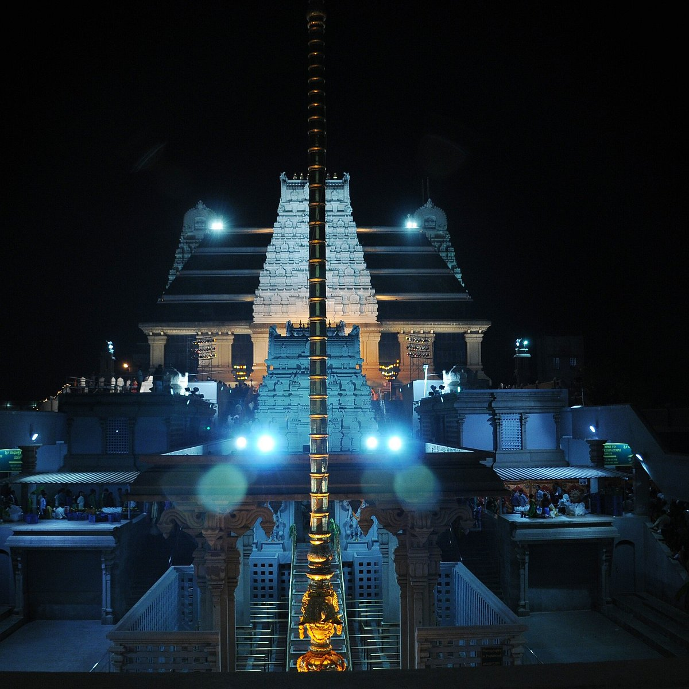
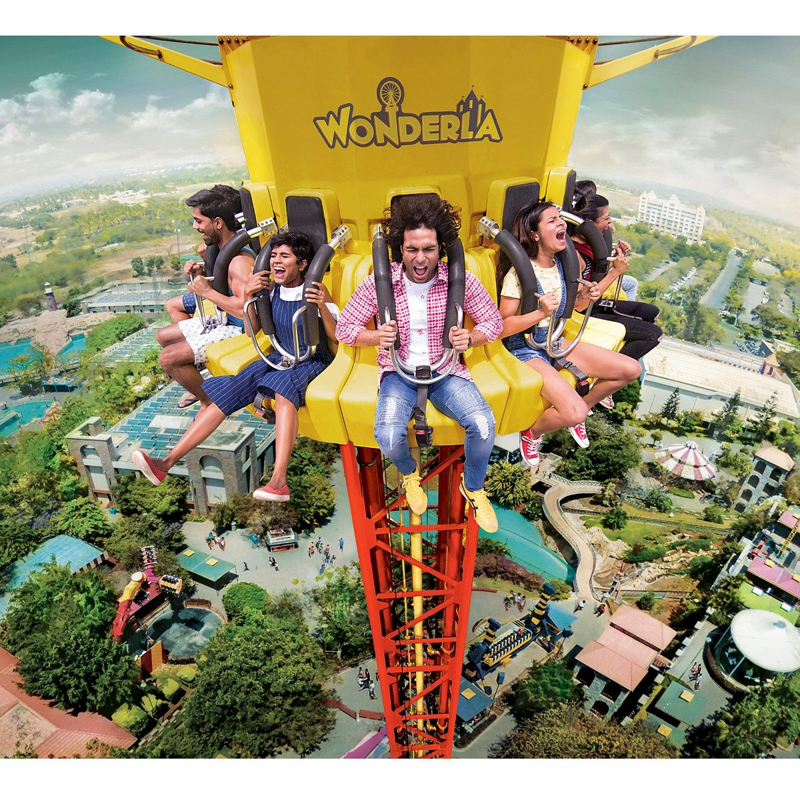
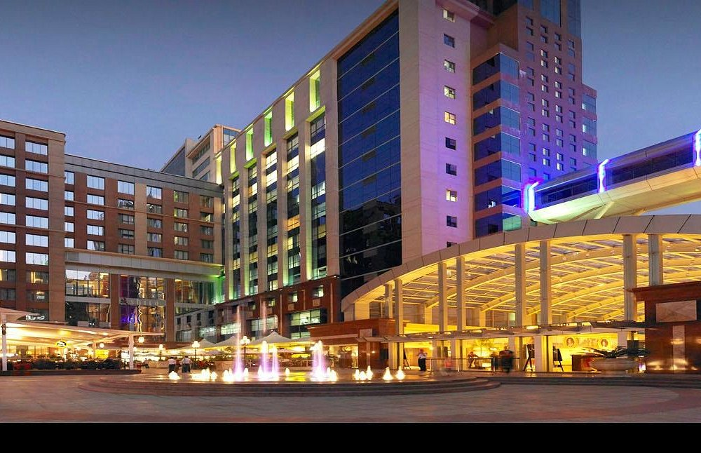
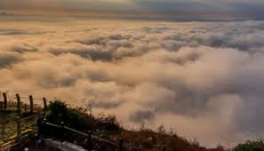

Welcome to my travel blog, Love Travelling. I’m Marion, an award winning independent traveller writing about my visits to countries near and far.I research destinations myself and that’s part of the fun – visiting the local library and selecting some travel guides, looking things up online and, of course, all the amazing tips I discover from fellow travel bloggers.
My passion is travel, I just love visiting new places, immersing myself into local cultures of life around the world and discovering the unexpected! Stepping off a plane, I’m always in a hurry to get my passport stamped, reclaim my luggage and walk out of the arrivals hall ready to begin a new adventure.
|

ISKCON TempleSri Krishna Balrama Temple is acknowledged for being the first temple constructed by the International Society for Krishna Consciousness (ISKCON). |

Wonderla BangaluruWonderla is a very good place to enjoy with friends and family. Weekdays are a little less crowded than weekends and one can plan accordingly. |

UB CityCentrally located in the CBD (Central Business District) of Bangalore on Vittal Mallya Road, UB City is just 1.5 kms away from the MG Road – Brigade Road junction. |

Nandi HillsNandi Hills is located at a height of 4,851 feet above sea level, this destination was previously the summer retreat of Tipu Sultan. |